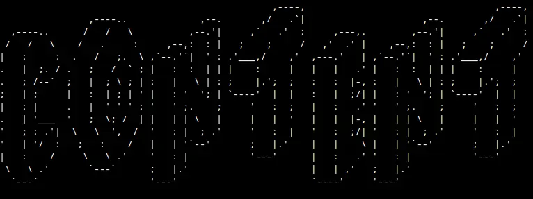

- 0x00 .......... Want to Contribute?
- 0x01 .......... Guides
- 0x02 .......... Numeric Bases
- 0.0 - Download topic content (.zip)!
- 1.0 - PT-BR - Positional Notation & Decimal Numbers | 0xDant
- 2.0 - PT-BR - Binary Numbers | 0xDant
- 3.0 - PT-BR - Hex and Octals Numbers | 0xDant
- 4.0 - PT-BR - Relationship between Numeric Systems | 0xDant
- 5.0 - PT-BR - Arithmetic Operations with Binary Numbers | 0xDant
- 0x03 .......... Algorithms
- 0.0 - Download topic content (.zip)!
- 1.0 - PT-BR - Introduction | 0xDant
- 2.0 - PT-BR - Variables, Constants and Operators | 0xDant
- 3.0 - PT-BR - Flow Control Structures | 0xDant
- 4.0 - PT-BR - Loops | 0xDant
- 5.0 - PT-BR - Procedure, Functions, Vectors and Matrix | 0xDant
- 6.0 - PT-BR - Algorithms Complexity | 0xDant
- 7.0 - PT-BR - Extra: Other Logic Operators | 0xDant
- 0x04 .......... C Language
- 0.0 - Download topic content (.zip)!
- 1.0 - PT-BR - Introduction | 0xDant
- 2.0 - PT-BR - Boolean and Char Variables | 0xDant
- 3.0 - PT-BR - Int Variables | 0xDant
- 4.0 - PT-BR - Float Variables | 0xDant
- 5.0 - PT-BR - Vectors(Arrays) | 0xDant
- 6.0 - PT-BR - Arithmetic Operators | 0xDant
- 7.0 - PT-BR - Logic Operators | 0xDant
- 8.0 - PT-BR - Bitwise | 0xDant
- 9.0 - PT-BR - Flow Control Structures | 0xDant
- 10.0 - PT-BR - Loops | 0xDant
- 11.0 - PT-BR - Pointers | 0xDant
- 12.0 - PT-BR - Arrays with Pointers | 0xDant
- 13.0 - EN-US - Dynamic Allocation | 0xDant
- 14.0 - PT-BR - Structs and Unions | 0xDant
- 15.0 - PT-BR - Functions | 0xDant
- 16.0 - PT-BR - Macro Processors | 0xDant
- 17.0 - PT-BR - Scope of Classes and Storage | 0xDant
- 18.0 - PT-BR - File Handling | 0xDant
- 19.0 - PT-BR - Data Structures | 0xDant
- 20.0 - PT-BR - Important Algorithms | 0xDant
- 21.0 - EN-US - Socket Programming | 0xDant
- 22.0 - PT-BR - Extra: Tips! | 0xDant
- 0x05 .......... Artificial Inteligence (IA's)